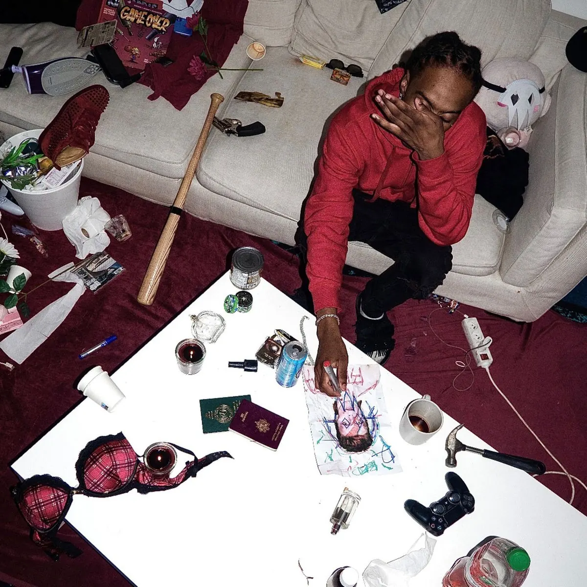

Publié le 10 octobre 2026

En ce début du mois d'octobre 2026, l'artiste parisien Bedry franchit une étape décisive dans sa carrière. Le célèbre média américain Complex l'a désigné comme le nouveau rappeur underground français à suivre absolument. Dans le même temps, sa présence est officialisée sur le très attendu projet de La Fève. Chez Nova Corporation, nous observons cette ascension depuis ses premiers visuels épurés. Cette double validation confirme le changement de dimension du rappeur parisien sur la scène rap.
Pourquoi le média Complex s'intéresse-t-il à Bedry ?
Le 8 octobre 2026, la rédaction américaine de Complex a braqué ses projecteurs sur la France. Le média a salué Bedry comme l'une des figures les plus stimulantes de la nouvelle vague francophone. Cet intérêt international s'explique par la singularité de sa formule sonore. Bedry s'approprie le rebond et les cadences de la scène DMV avec une aisance impressionnante. Ses titres comme Davidbowie accumulent plus de 350 000 vues sur YouTube grâce à une esthétique brute et sans artifice. Les observateurs américains restent fascinés par la manière dont la jeunesse parisienne réinvente les sonorités d'outre-Atlantique. Son style dépouillé et ses textes incisifs séduisent un public lassé des formats calibrés pour les radios traditionnelles.
Quelle est la place de Bedry sur la scène parisienne ?
La reconnaissance internationale de Bedry s'appuie sur une solide ancrage locale. L'annonce de sa collaboration avec La Fève sur la tracklist de FINIS-LES en apporte la preuve irréfutable. Partager un morceau avec le patron de la nouvelle vague française démontre son poids grandissant dans la capitale. Bedry multiplie également les connexions avec d'autres figures montantes comme 63KLUF ou Bryan Countach. Sur scène, l'artiste a déjà rodé ses morceaux au Nouveau Casino et à La Place à Paris. Vous pouvez d'ailleurs consulter notre agenda complet sur les scènes parisiennes pour suivre les prochains événements underground. Bedry incarne aujourd'hui la passerelle idéale entre l'expérimentation pure et la première ligne du paysage rap francophone.
Quelle est la formule sonore de Bedry et quels sont ses défis ?
Le son de Bedry se caractérise par des basses lourdes, des beats épurés et un débit imprévisible. Sa productivité régulière lui a permis de construire une identité forte en quelques mois seulement. Les chiffres attestent de cet engouement constant au sein du public spécialisé.
| Titre | Année | Format / Collaboration |
|---|---|---|
| Davidbowie | 2025 | Single solo (350 000 vues) |
| Piña Colada | 2025 | Single solo (270 000 vues) |
| NICKIMINAJ | 2026 | Featuring Bryan Countach |
| Lombaires | 2026 | Single solo prod. rxant |
Cependant, tout n'est pas encore gagné pour le rappeur parisien. Bedry suscite une immense attente avec le projet Beewaba, régulièrement teasé mais sans date de sortie ferme. La stratégie des extraits courts et des promesses non tenues peut finir par essouffler la communauté. Pour transformer ce buzz médiatique en succès durable, Bedry devra concrétiser avec un projet long et structuré. Son apparition fin octobre aux côtés de La Fève sera le révélateur ultime de son potentiel.